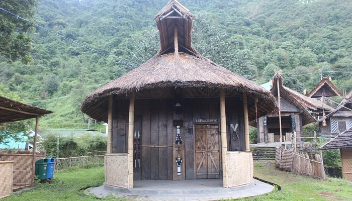
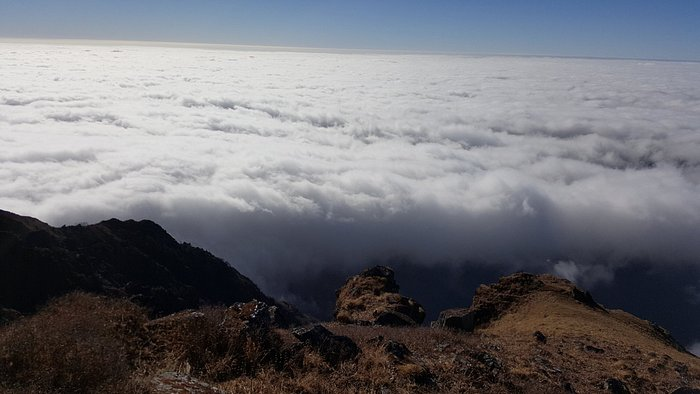

Famous Places
Naga Heritage Village
Kisama Heritage Village (also Naga Heritage Village) is a Heritage Village located on the slopes of a hill between Kigwema and Phesama Villages in the Kohima District of the Indian state of Nagaland. The Heritage Village is the venue of the annual Hornbill Festival.
Doyang River

The Doyang is the longest and largest river in the Indian state of Nagaland. With its origin from small streams near the Nagaland–Assam border
Mount Saramati
Saramati is a peak rising above the surrounding peaks at the mountainous border of the Indian state of Nagaland and the Naga Self-Administered Zone of the Sagaing Region of Myanmar. It is located near the village of Thanamir in the Kiphire District of Nagaland.